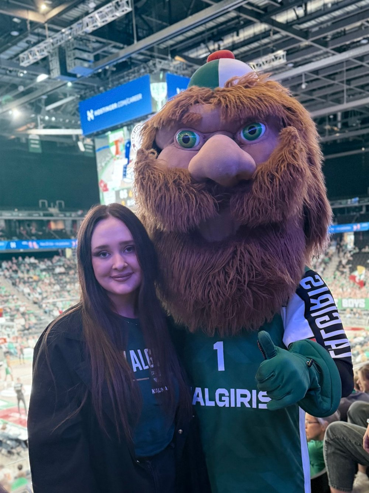

I turn customer research into briefs worth testing.
I've taken 10+ health & wellness brands from first research to live Meta campaigns: angles, advertorials, static ads and a lot of Mondays spent reading the data.
brands taken from research to live Meta campaigns
at a health & wellness performance agency
languages I can research and brief in: English, Lithuanian, Russian
Strategy case studies
Full brief packs for real wellness brands: what they run today, what their customers actually say, and the concepts I'd test next, with a hypothesis behind each one.
One pump, real acne
A UGC hook test showing what the brand's before/after ads didn't: real acne.
One winner, two next moves
Breaking down an 8-month winning UGC ad and briefing what to test next.
One night, three feelings
Three static ads testing which emotion stops women in menopause scrolling.
Case studies are spec projects and test tasks built on public information only. Client work from my agency role is under NDA.
Where the thinking started
Spec pieces I made before joining the agency. Each one started with the same question: what does this audience already believe, and what would change their mind?
Six angles, one audience
Broke down why women can't stop watching true crime: understanding, safety, justice, rebellion, usefulness and control. Each one could carry its own ad.
Read the piece → Advertorial · AstrologySelling to a skeptic
Opens with the reader's objection ("horoscopes are nonsense"), agrees with it, then turns it: astrology was never twelve personalities, it's your full chart.
Read the piece → Brand page · BeautyPicking a cultural enemy
Positions a smudge liner against the "clean girl" aesthetic, so a makeup product becomes a stance: done being beige, done being decorative.
Read the piece → Landing page · Health techSelling being heard, not data
Reframes a health app around the real pain: being dismissed by doctors. The product isn't the data, it's finally being taken seriously.
Read the piece →The writing is the last step.
Most ads fail before anyone writes a word, because the angle was wrong. So most of my time goes into what comes before the copy, and into reading the results after.
Research
Reviews, Reddit threads, competitor winners and market awareness levels, in the customer's own words.
Insight
Finding the tension: what people believe, what they've already tried, and why it didn't work.
Hypothesis
Every concept starts as a bet that can be proven wrong, with a metric attached.
Brief
Angle, hooks, format, script beats and visual direction, clear enough for any creator or editor.
Test & iterate
Read hook rate, CTR and CPA, then decide what to scale, fix or kill, and brief the next round.
Research doc
Customer language, objections and awareness levels, pulled from reviews, Reddit and competitor ads.
Angle map
Several directions per product, ranked by the insight and the audience behind each one.
Creative briefs
Hooks, script beats, format and visual direction a designer or creator can work from on day one.
Iteration notes
What the numbers said, what to scale, what to fix, and what to brief in the next round.
Where I learned it
Health & Wellness Media
Apr 2026 – Nov 2026Junior Conversion Copywriter · Performance agency
- Ran research, angles and copy for 10+ health & wellness brands, taking each from a blank page to live Meta campaigns.
- Did the market research behind each project: product-market fit, awareness levels, competitor winners and customer sentiment from Reddit and reviews.
- Built several strategic angles per brand for clients to choose from before any writing started.
- Read ad testing data to find what wasn't converting, then reworked and re-tested it.
- Wrote advertorials, listicles and cold-traffic hooks, and designed visuals for image ads on Meta.
Client names and creative are under NDA. Happy to walk through my process and the kind of results I worked with in an interview.
Toolkit

Hi, I'm Kamila.
I was never a Monday person. Then I started working in performance marketing.
Monday was when the numbers came in: which hooks held attention, which angles converted, what to build next. Research and strategy were already part of my job. But advertorial feedback comes slowly, and I always wanted more of it, faster.
Creative strategy is the opposite: many concepts, fast tests, and decisions made every day from real data. That's the part of the work I'm best at, and the part I want to do full-time. More concepts, more tests, more Mondays.
Need someone to brief your next round of ads?
I'm open to creative strategist roles, in-house or agency, remote or in Vilnius.
kamila.copy.hq@gmail.com